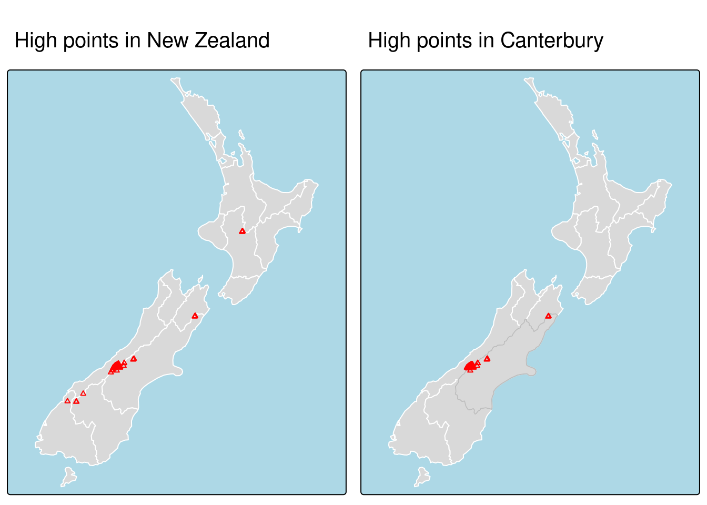
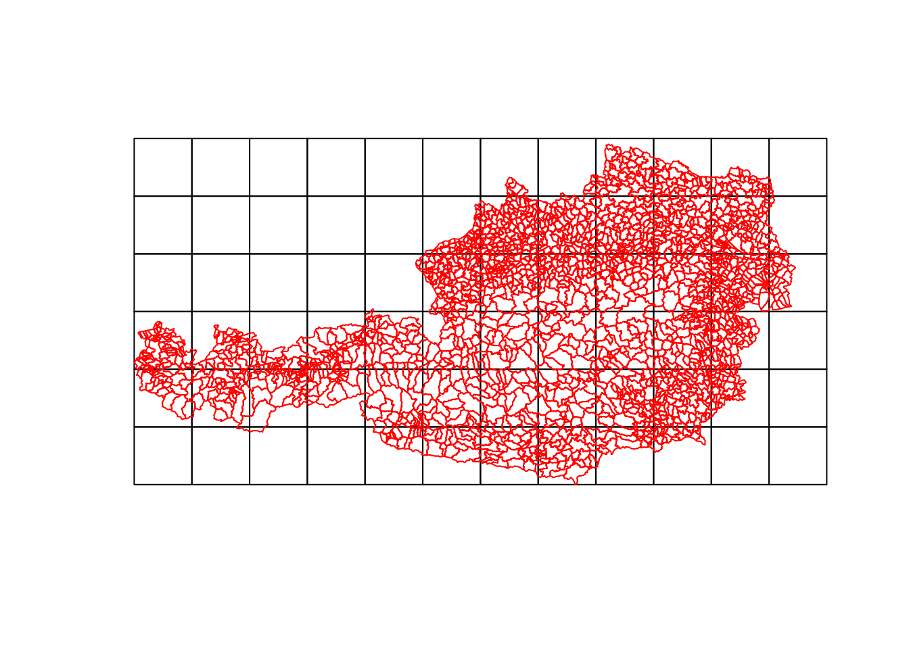
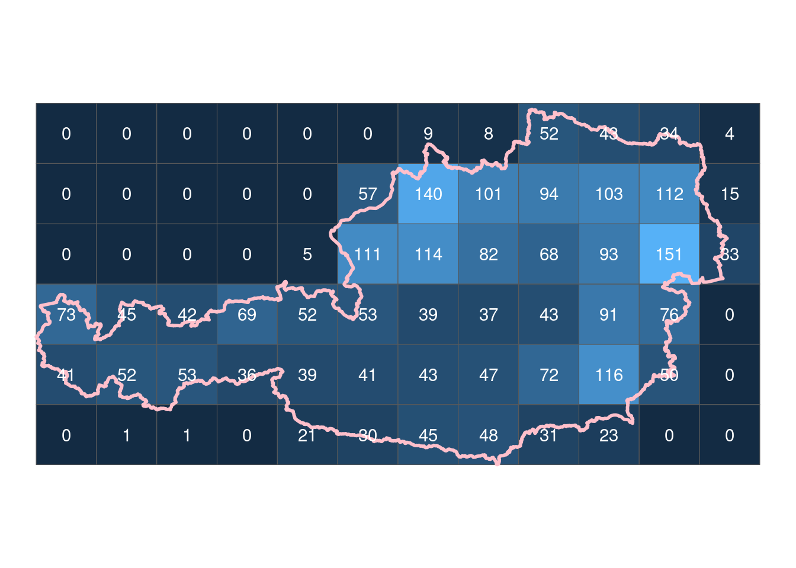
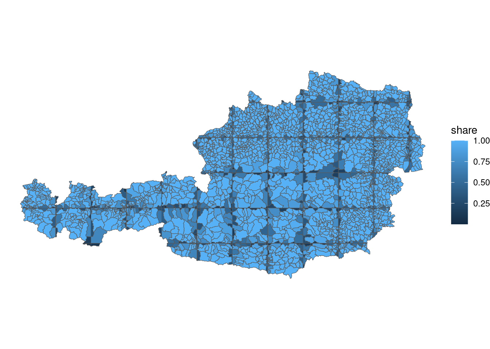

Code
elev = rast(system.file("raster/elev.tif", package = "spData"))
grain = rast(system.file("raster/grain.tif", package = "spData"))elev = rast(system.file("raster/elev.tif", package = "spData"))
grain = rast(system.file("raster/grain.tif", package = "spData"))Taking a spatial object and returning only features that relate in space to another object
As in attribute subsettung the square bracket syntax can be used
x[y,,op=st_intersect] where x is an sf object of which these rows will be returned that intersect with y
op=st_intersects is the topological relation. st_intersects() is the default topological relation. So x[y,] is the same as the above
canterbury = nz |> filter(Name == "Canterbury")
canterbury_height = nz_height[canterbury, ]
p_hpnz1 = tm_shape(nz) + tm_polygons(col = "white") +
tm_shape(nz_height) + tm_symbols(shape = 2, col = "red", size = 0.25) +
tm_layout(main.title = "High points in New Zealand", main.title.size = 1,
bg.color = "lightblue")Warning: The 'main.title' argument of tm_layout is deprecated as of tmap 4.0.
Please use tm_title instead.p_hpnz2 = tm_shape(nz) + tm_polygons(col = "white") +
tm_shape(canterbury) + tm_fill(col = "gray") +
tm_shape(canterbury_height) + tm_symbols(shape = 2, col = "red", size = 0.25) +
tm_layout(main.title = "High points in Canterbury", main.title.size = 1,
bg.color = "lightblue")Warning: The 'main.title' argument of tm_layout is deprecated as of tmap 4.0.
Please use tm_title instead.tmap_arrange(p_hpnz1, p_hpnz2, ncol = 2)
Lets imagine we have a two polygons
The very big, non-simppified 2115 gemeinden of Austria, and a 50km Grid overlaid
Now we can ask many qustions!
path_gemeinden_2023 = here("data/geodata/gems_oe_31287.fgb")
gems = read_sf(path_gemeinden_2023)
grid = st_make_grid(gems, cellsize = 50000) %>% st_sf()
oe = read_sf(here("data/geodata/oe_outline_31287.fgb"))
plot(grid)
plot(gems[0], add=T, border="red")
stIntersects = function(a, b){
is =st_intersects(a,b)
ls = lengths(is)
a[["n_intersections"]] = ls
return(a)
}
stIntersectsDplyr = function(a, b){
a = a %>%
mutate(
n_intersections = lengths(st_intersects(., b))
)
return(a)
}
b = bench::mark(
noDplyr = stIntersects(grid, gems),
dplyr = stIntersectsDplyr(grid, gems)
)
res = stIntersects(grid, gems)
ggplot() +
geom_sf(data =res, aes(fill=n_intersections), show.legend = F) +
geom_sf(data =oe, fill=NA, color="pink", linewidth=1) +
geom_sf_text(data=res, aes(label=n_intersections), color="white") +
labs(
x =NULL,
y =NULL
) + theme_void()
GEOS
geosIntersect = function(a, b){
a_geos = as_geos_geometry(a)
b_stre = as_geos_strtree(b)
n_intersections = lengths(geos_intersects_matrix(a_geos, b_stre))
a[["n_intersections"]] = n_intersections
return(a)
}
compare_sf_geos = bench::mark(
check = T,
sf = stIntersects(grid, gems),
geos = geosIntersect(grid, gems)
)Warning: Some expressions had a GC in every iteration; so filtering is
disabled.compare_sf_geos# A tibble: 2 × 6
expression min median `itr/sec` mem_alloc `gc/sec`
<bch:expr> <bch:tm> <bch:tm> <dbl> <bch:byt> <dbl>
1 sf 405ms 433.1ms 2.31 117MB 2.31
2 geos 64ms 93.1ms 11.7 248KB 0 areaNoDplyr = function(a){
a[["area"]] = st_area(a)
return(a)
}
areaDplyr = function(a){
a = a %>%
mutate(
area = st_area(.)
)
return(a)
}
b_area = bench::mark(
dplyr = areaDplyr(gems),
no_dplyr = areaNoDplyr(gems)
)Warning: Some expressions had a GC in every iteration; so filtering is
disabled.areaIntersection = function(a, b){
# get area for b
b = b %>%
mutate(
area = st_area(.)
)
share = b %>%
st_intersection(grid) %>%
mutate(
share = units::drop_units(st_area(.) / area)
)
return(share)
}
areas_share = areaIntersection(grid, gems)Warning: attribute variables are assumed to be spatially constant throughout
all geometriesggplot() +
geom_sf(data = areas_share,
aes(fill = share)) +
theme_void()